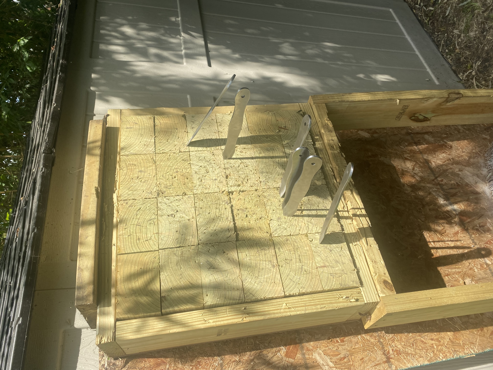
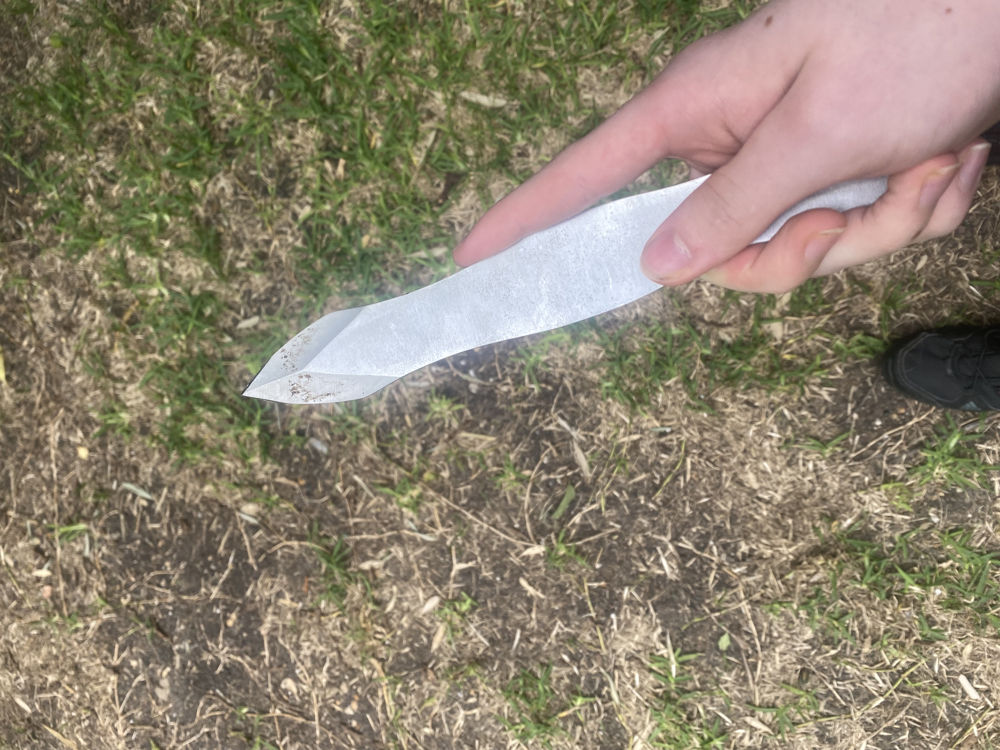
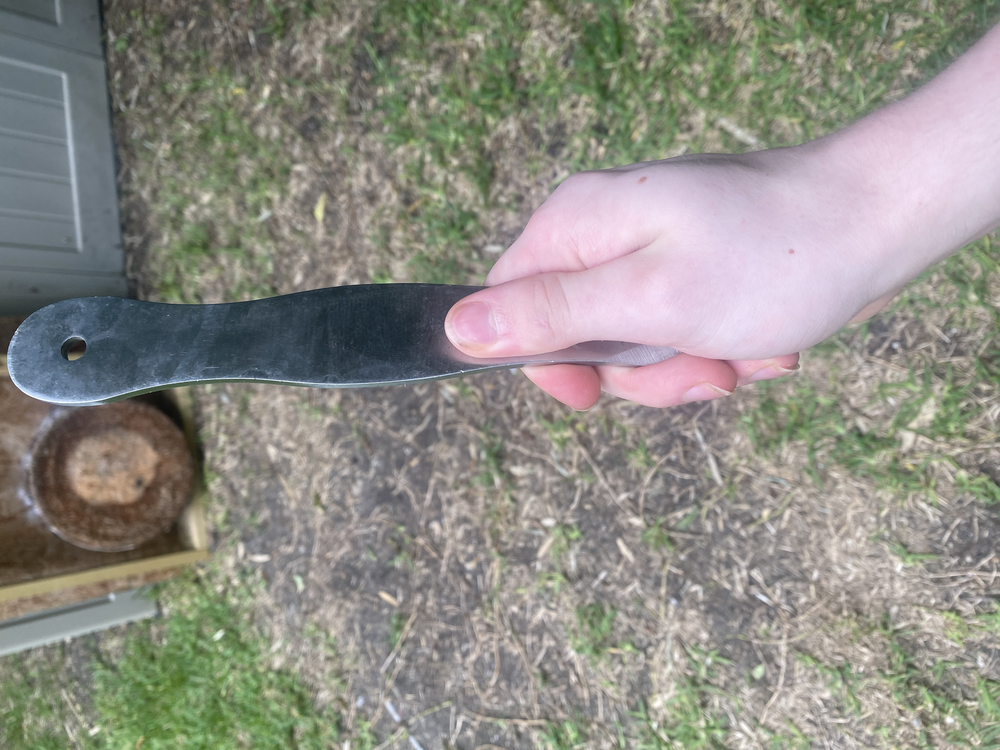
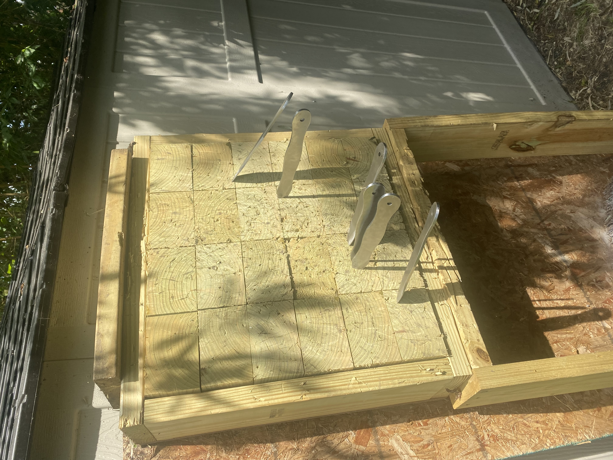
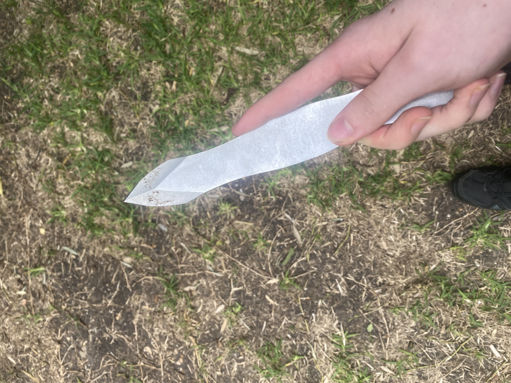
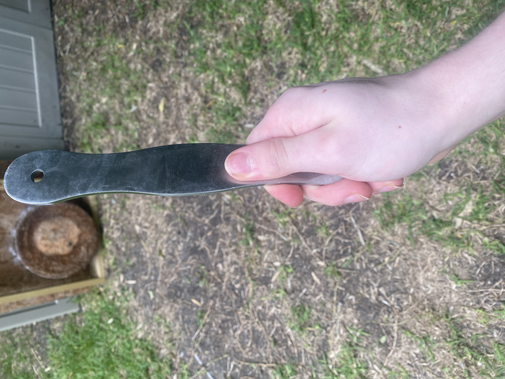
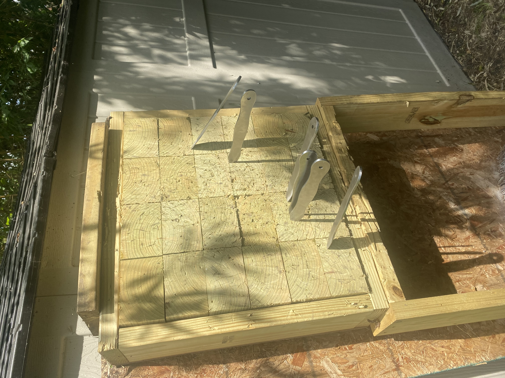
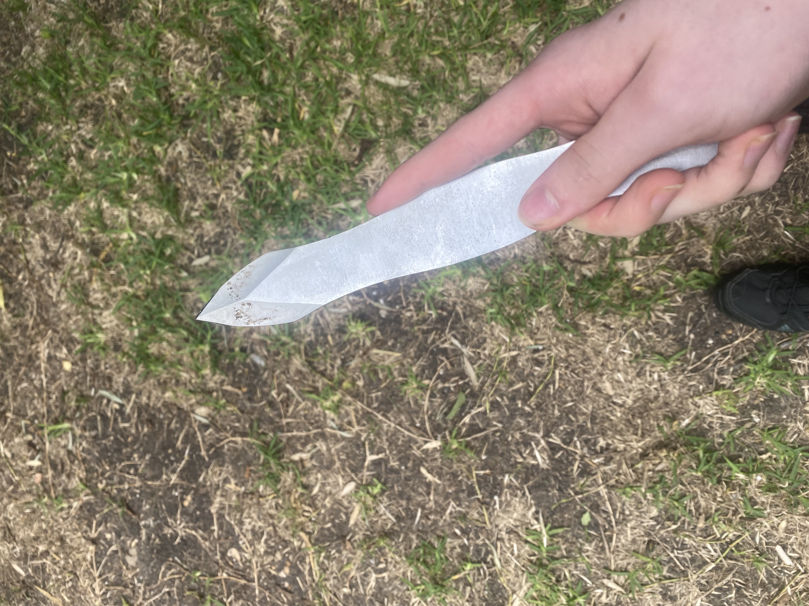
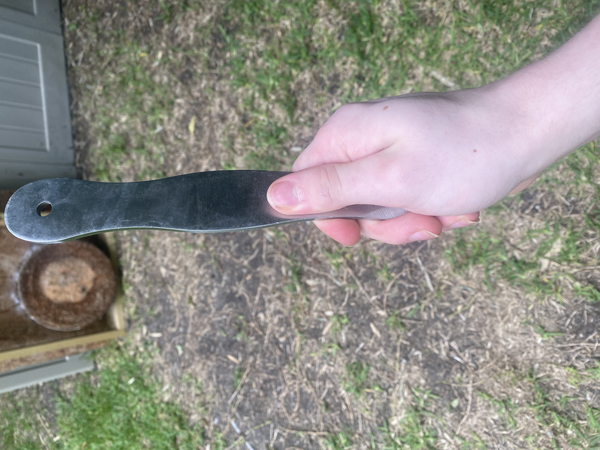

Hi, my name is Vincent Orsini, I am 18 years old and I’m from Dallas, Texas. I graduated from Woodrow Wilson High school where I learned 4 different programming languages. I love being creative and bringing my ideas to life with the help of coding and programming. I have traveled to many places with my parents because of my Father's frequent traveling for work. These places include Paris, Sydney, and London. My 2 favorite hobbies are throwing knives and working out. Throwing knives has to be the most satisfying feeling ever! While working out is my outlet and has helped me improve my self in many ways not only physically but mentally too.

On August of 2019, when I was a Junior in high-school I started my very first coding class, Pre-Ap Computer Science. At the time I thought the class was going to be over how computers worked turns out it was an introduction to coding. We started off with coding on Snap![1]. Snap! is a free programming language that lets you pick blocks of code and connect them together and use them to manipulate the sprite(s) on the screen, or/and control what is output in the window. What got me really excited was you could make video games on Snap!. Which I did multiple times and enjoyed very much it also was a way for me to put my creativity to the test. The ability to have an idea and make it work on the screen just how I imagined it was amazing to me it’s what got me hooked on coding. Shortly after my first semester we moved away from snap and on to Python[2], which was harder because Python is text based. Even with Python it was still fun to me you could make the code perform an action you wanted it to if you had the correct code (you could also make text based games or card games ). When the end of the year came I found out that they were making a Gaming Design Class which would be taught in C#[3](pronounced C-Sharp) where we would code Xbox games. It turned out that in order to take the Gaming Design Class you’d have to already have taken AP Computer Science A, which was learning Java[4]. My teacher broke me a deal that I could double up to take both courses my Senior year and I did. I was one of the only 2 people in the whole school to double up in those 2 classes learning Java and C# at the same time. I loved both classes and they together grew my love for coding. A few video games I made were Frogger, Breakout, Flappy Bird, Space Invaders, and Top-Down 2D shooter based off of Dead Ops Arcade. For everyone of those games I went above and beyond the requirements because of my creativity and drive.


Lifting has been part of my life since I was in 7th grade when I started lifting with my old man. My Father was always consistent with working out because we had dumbbells at home, So he would wake up and lift each morning. Me on the other hand being in 7th grade would rather play video games ,so I would lift sometimes but I wasn't consistent. since 7th grade I wouldn't lift more than a few months at a time and I had ZERO clue how I was supposed to be eating besides my Father telling me to eat more red meat. It was like this up until the summer of 2020, when I decided to look up how to gain more muscle. The video I watched changed my life because It told me how to determine how much protein I need to eat each day that I lift. That equation simplified was 1 gram of protein per pound that you weigh. So I started keeping track of my protein intake on July ,31st of 2020, I weighed 139 pounds at this time. I gained 10 pounds of muscle the first month. By the end of January I hit 165 pounds gaining 26 pounds in around 6 months. Of course not all of it was 100% muscle but it mostly was I started doing an Ab workout challenge for 22 days and burnt off a good amount of fat while retaining all the muscle and at the same time made my abs more pronounced from their increase in size. Now in July I am much more vascular and my bicep veins are starting to come out! It has been almost a year now and I've been consistent the whole time I haven't missed a single workout, every morning of the week I have been lifting. It has really paid off, I look like a whole new person now.

I started throwing knives in May of 2021, when my mom gave me a small set of 3 throwing knives. They were very light and small. Having nothing to throw them at I started throwing them into the grass and dirt in the back yard. A few weeks later my mom got me an archery target to throw them into. After throwing them into the archery target in the back yard for a few days, I decided to look up how to throw them. Turns out there are many techniques though there are many they are all different variations of 3 throwing styles: no spin, half spin and full spin. They mean exactly what you might think, how much the knife spins through the air if at all. There are different benefits and cons for each throwing style. For example, The no spin technique the distance you throw the knife from doesn’t matter, but it can be difficult to learn. By the way every other knife throwing style the distance from your target matters because the knife is going to be spinning so it can’t over rotate or under rotate if you want it to stick. After I did my research I realized we need bigger knives to do the no spin technique. This is because throwing no spin requires you to put your index finger along the spine of the knife. This allows you to drag your finger down the spin as it releases from your hand to delay the time it takes for the bladed end to face the target. The knives I had were too small to do that I could stick some pencils in though!!. So my parents ordered bigger knives my dad ordered 8 inch throwing knives while my mom ordered some to nice to throw 6.5 inch throwing knives. While we were waiting for those to come in I did more research and found out you could get 12 in spike construction nails for 75 cents each. So we did that and modified them and sharpened them. My dad looked up how to make a wooden throwing knife target and bought all the stuff for it and made It in about 4 hours and it was huge. I remembered thinking to my self “How will that ever get anything stuck into it. It’s so much harder than the archery target.” Then we finished sharpening the nails and they stuck in very nice when I used the right form with no spin. Not too long after the 8 inch knives came in (2 sets of 3 knives) we threw them and they just sank into the wood with ease. So much better than the nails or the small throwing knives I had before. I was able to get them in with every possible throwing style because they were heavier center balanced and the blade shape. There is one other throwing knife technique which is very different from all the others and its called skanf. Skanf is a Russian style of throwing knives that only a few people have been able to master or even know about. Skanf you can throw in any direction from your body and you can do it without even moving your shoulder. You only need to use your wrist and turn your body slightly to make sort of a whip effect which multiply the force the knife is being thrown. Allowing you to throw it from you side or even behind you. It’s crazy I haven’t learned it yet fully but I am trying to currently.


